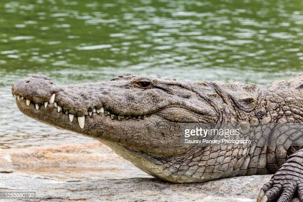
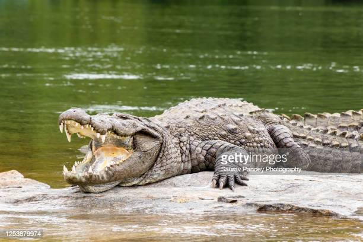

| Class | Order | Family |
|---|---|---|
| Reptilia | Crocodylia | Crocodylidae |
They are also known as “Marsh Crocodile” or “Mugger”. They can reach 3-5 m. The dorsal part of the body is gray to brown or dark olive, usually without a dark band. But young consist of black bands. Ventral part of the body is white or yellowish white. The snout of Crocodylus palustris is broad, and the forehead is concave. Fingers are partially webbed while, the outer two digits of toes are fully webbed, middle two digits are not webbed till the tip, and inner two are partially webbed. Upper jaw consists 17-19 teeth and lower jaw consists 14-15 teeth.
এরা "Marsh Crocodile" বা "Mugger" নামেও পরিচিত। তারা ৩-৫ মিটার পর্যন্ত পৌঁছতে পারে। শরীরের পৃষ্ঠীয় অংশ ধূসর থেকে বাদামী বা গাঢ় জলপাই রঙ্গের। প্রাপ্ত বয়স্কদের সাধারণত কালো ব্যান্ড থাকে না। কিন্তু কম বয়সীদের আড়াআড়ি কালো দাগ বা ব্যান্ড থাকে। দেহের অঙ্কীয় অংশ সাদা বা হলুদাভ সাদা। Crocodylus palustris-এর মুখ প্রশস্ত এবং কপাল অবতল। হাতের আঙ্গুলগুলি আংশিকভাবে লেপ্টানো (webbed) থাকে, পায়ের বাইরের দুটি অঙ্গুল সম্পূর্ণভাবে লেপ্টানো, মাঝের দুটির ডগা পর্যন্ত লেপ্টানো থাকে না এবং ভিতরের দুটি আংশিকভাবে লেপ্টানে থাকে। উপরের চোয়ালে ১৭-১৯ টি দাঁত এবং নিচের চোয়ালে ১৪-১৫ টি দাঁত থাকে।
This sluggish creature lives in freshwater pond, lake, river, dam, and, reservoir. They prefer to live in still water far from tidal influence. Usually lives in group except breeding male. During breeding season From November to February, males show dominance and the dominant males mate several females. Mating takes place in water. They feed mainly on fish. However, birds, frog, and other vertebrates are also eaten. Hatchlings feed on insects and small fish.
এই অলস প্রাণীটি মিষ্টি জলের পুকুর, হ্রদ, নদী, বাঁধ এবং জলাশয়ে বাস করে। তারা জোয়ারের প্রভাব থেকে দূরে স্থির জলে থাকতে পছন্দ করে। সাধারণত প্রজনন সক্ষম পুরুষ ছাড়া অন্য সবাই দলবদ্ধভাবে বসবাস করে। নভেম্বর থেকে ফেব্রুয়ারি পর্যন্ত প্রজনন ঋতুতে, পুরুষরা আধিপত্য বিস্তার করে এবং প্রভাবশালী পুরুষরা বেশ কয়েকটি স্ত্রীর সাথে মিলিত হয়। সঙ্গম জলে সংঘটিত হয়। এরা মূলত মাছ খায়। তবে, পাখি, ব্যাঙ এবং অন্যান্য মেরুদণ্ডী প্রাণীও তারা খায়। বাচ্চারা পোকামাকড় এবং ছোট মাছ খায়।
Bangladesh, Iran, India, Nepal, Pakistan, Sri Lanka, possibly areas of Indochina.
বাংলাদেশ, ইরান, ভারত, নেপাল, পাকিস্তান, শ্রীলঙ্কা, সম্ভবত ইন্দোচীন এলাকা।
This species is extinct in wild environment of Bangladesh, but reared in captivity of Dhaka Zoo, Dulahazara Safari park, and Khan Jahan Ali Mazar.
বাংলাদেশের বন্য পরিবেশে এই প্রজাতিটি বিলুপ্ত হলেও ঢাকা চিড়িয়াখানা, দুলাহাজারা সাফারি পার্ক এবং খান জাহান আলী মাজারে এদের লালন-পালন করা হয়।